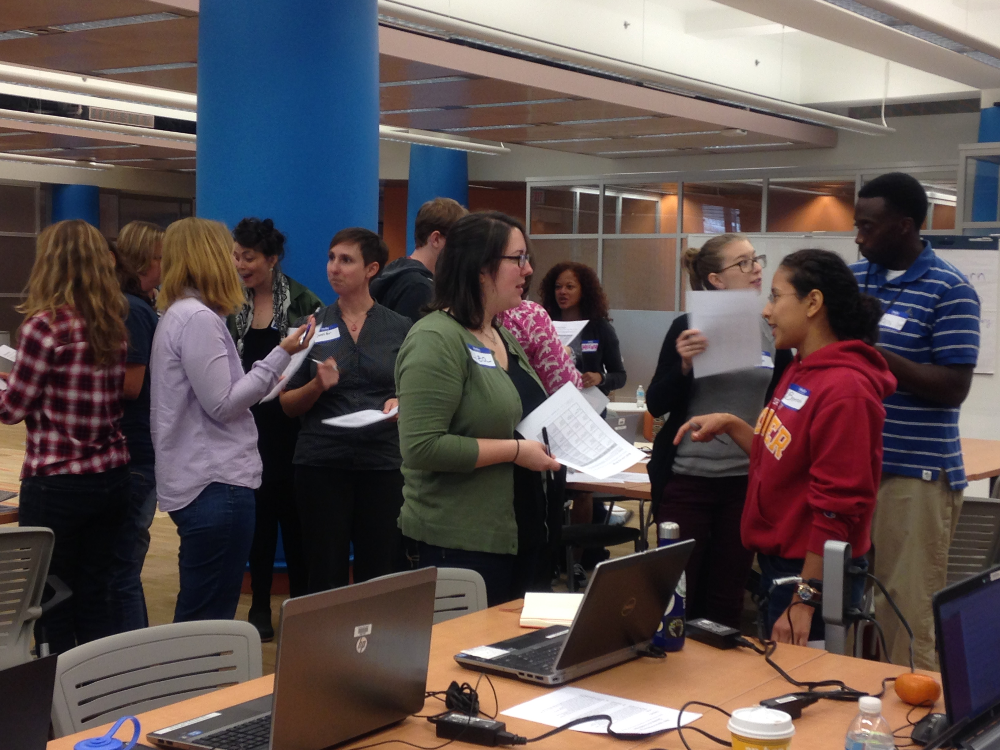

ওয়েব মেকানিক্স স্পিড ডেটিং
২০ মিনিট
ওয়েব মেকানিক্স একটি টুলস, বৈশিষ্ট্য এবং ফাংশনের সমন্বয় নির্ধারণ করে কিভাবে আমরা ইন্টারনেট ব্যবহার করি | ওয়েব মেকানিক্স বোঝা, আমাদের ব্যক্তিগত তথ্য অনলাইন রক্ষা কোরতে আর URL,IP ঠিকানা, খোঁজা শব্দ, বুকমার্ক এবং আরো অনেক কিছু বুঝতে এবং ব্য়বহার করতে সাহায্য করে | এই কার্যকলাপ একটি অফলাইন গুরুপ কার্যকলাপের মাধ্যমে ওয়েব মেকানিক্সের বুনিয়াদি পরিচয় করাবে | এই কার্যকলাপ সব বয়সের মানুষের জন্য অভিযোজিত করা যাবে |
৬ এর কার্যকলাপ ১
পড়ুন এবং ওয়েবে অংশগ্রহণ করুন
২১ শতাব্দীর দক্ষতা
বার্তাওয়েব সাক্ষরতার দক্ষতা
নেভিগেট প্রকল্পশিক্ষার উদ্দেশ্য
- অনলাইন ন্যাভিগেশন এবং ব্যক্তিগত তথ্য রক্ষা জড়িত ওয়েব মেকানিক্সের শব্দভান্ডার জানুন এবং বুঝুন |
- ঘটনা অংশগ্রহণকারীদের মধ্যে সম্প্রদায় তৈরি করুন |
পাঠকবর্গ
- ১৩+
- শিক্ষানবিশ ওয়েব ব্যবহারকারী
উপকরণ
- কলম / মার্কার
- কাগজ
- সময় নির্ণায়ক
-
প্রস্তুতি
নাম কার্ড বানানো: নীচের তালিকাভুক্ত করা প্রত্য়েক ওয়েব মেকানিক্সের জন্য় নাম কার্ড তৈরি করুন | প্রতিটি কার্ডের দুটি দিক আছে | কার্ডের সামনে ওয়েব মেকানিক্সের নাম লিখুন (যেমন, কুকিস) | পিছনে কয়েকটি বাক্য়ে ওয়েব মেকানিক্সের বিবরণ লিখুন (যেমন, "ওয়েবসাইটের মাধ্য়মে আপনার ব্রাউজারে পাঠানো আমি একটা লেখার ছোট্ট অংশ |") | কার্যকলাপ শুরু হওয়ার আগে আপনি এই কার্ড গুলি তৈরি করতে পারেন অথবা আপনার অংশগ্রহণকারীদের সাহায্য় নিতে পারেন |
- কুকিস: ওয়েবসাইটের মাধ্য়মে আপনার ব্রাউজারে পাঠানো আমি একটা লেখার ছোট্ট অংশ |
- ব্যান্ডউইথ: আমি একটা ইলেকট্রনিক উপপথ যে, আপনার কম্পিউটারে ইন্টারনেট সংযোগ স্থাপন করি | আমাকে বৃদ্ধি করিলে দ্রুত ইন্টারনেট সংযোগ করতে সক্ষম হবেন |
- বুকমার্ক: ওয়ার্ল্ড ওয়াইড ওয়েবের প্রসঙ্গে আমি একটি আইডেন্টিফায়ার যে পরে আহরণের জন্য সংরক্ষিত হইয়া থাকি |
- ওয়েব কোডিং ভাষাসমূহ: আমি ওয়েব ব্রাউজার কে বলি কিভাবে ওয়েব পেজ কে গঠন এবং বিষয়বস্তু উপস্থিত করতে হয় |
- URL: আমি একটি নির্দিষ্ট অক্ষর স্ট্রিং যে কোন রিসোর্সকে একটি রেফারেন্স-এ গঠন করি |
- ব্যক্তিগত নিরাপত্তা নির্দিষ্টকরণ: আমি বিভিন্ন উপায়ে, তাদের কিভাবে তথ্য় অ্যাক্সেস করা যেতে পারে তা নির্ধারণ করতে, ওয়েব ব্য়বহার সম্পর্কে মানুষকে সক্রিয় করি |
- IP: আমি একটি সংখ্য়াসূচক লেবেল যে, প্রতিটি ডিভাইস নির্ধারিত কম্পিউটার নেটওয়ার্কের মধ্য়ে অংশগ্রহণ করিয়া থাকি | আমি ইন্টারনেট প্রোটোকল হিসাবেও পরিচিত |
- ব্রাউজার: আমি ওয়ার্ল্ড ওয়াইড ওয়েবে, তথ্য় সম্পদের পুনরুদ্ধারের উপস্থাপনা এবং অনুসন্ধানের জন্য় একটি সফটওয়্যার অ্যাপ্লিকেশান |
অংশগ্রহণকারী: ধরে নিন আপনার অংশগ্রহণকারীরা ওয়েব মেকানিক্স সম্পর্কে নতুন, এটা কি এবং কেমন ভাবে কাজ করে সেটা পরিচয় করার জন্য় একটি উপায় বার করুন | একটি আলোচনা, পাঠ্য় পরিকল্পনা, প্রশ্ন উত্তর ইত্য়াদির মাধ্য়মে এটি সম্ভব | অংশগ্রহণকারীরা তাদের কার্ডে লিখিত মেকানিক্সের ভূমিকা পালন করবেন এবং এমন ভাবে যেন তাদের মেকানিক্সদের সাথে সাক্ষাত্ হচ্ছে | এই ভাবে শিক্ষার্থীরা পরস্পরকে তাদের ওয়েব মেকানিক্সের শিক্ষা দিতে পারে, যেমন তারা একে অপরকে পরিচয করিয়ে থাকে | মূল লক্ষ্য় যে কার্যকলাপ শুরু করার সময প্রত্য়েকে ওয়েব মেকানিক্সদের উপাদান নিয়ে সহজে আলোচনা করতে পারে |
-
কার্যকলাপ
১৫ মিনিটকার্যকলাপের পরিচয় দিন: কার্যকলাপে অংশগ্রহণকারীদের সবাইকে একত্রিত করুন | প্রতিটি ব্য়ক্তি যেন একটি করে নাম কার্ড পায় | অংশগ্রহণকারীদের কিছু সময় তাদেরকে দেওয়া নাম কার্ড-এর সামনে ও পিছনের অংশ পড়তে বলুন | প্রত্য়েকেই যেন তাদের কার্ডে তালিকাভুক্ত ওয়েব মেকানিক হওয়ার ইচ্ছা প্রকাশ করে | একবার কার্যকলাপ শুরু হলে, তাদের দুই মিনিটের মধ্য়ে রুমে অন্য়ান্য় ওয়েব মেকানিক সম্পর্কে শিখতে হবে |
কার্যকলাপ শুরু করুন: দুই মিনিট অন্তর একটি করে টাইমার সেট করুন | ঘড়ি শুরু করুন এবং দ্রুত একে অন্য়ের সঙ্গে মিলতে বলুন (এটা একটি জোড় সংখ্য়া অংশগ্রহণকারীদের সঙ্গে ভাল কাজ করে, কিন্তু একটি বিজোড় সংখ্য়ার সঙ্গেও কাজ করতে পারে) | তারা নিজেরা দুই মিনিটের মধ্য়ে একে অপরের সঙ্গে পরিচয় করিয়ে দেয় এবং একে অপরকে নিচের সংক্ষিপ্ত প্রশ্ন গুলি জিজ্ঞাসা করে | দুই মিনিট পর তাদের অন্য় ব্য়ক্তির সঙ্গে একই জিনিস করতে বলুন | এই ভাবে কাজ করতে থাকুন যতক্ষণ না সবাই একে অপরের সঙ্গে দেখা করার একটি সুযোগ পায় |
- আপনি কি করেন ?
- আপনার বন্ধুরা কি ধরনের ?
- আমাদের মধ্য়ে কিভাবে যোগাযোগ গড়ে উঠবে ?
- আপনার বয়স কত ?
- আপনার বাড়ি কোথায় ?
-
প্রতিফলন
৫ মিনিটকার্যকলাপের পরে বৃত্তাকারে সবাই একত্রিত হয়ে কার্যকলাপ সম্পর্কে আলোচনা করুন | তারা শিখেছে এমন কোনো চ্য়ালেঞ্জ, মজার বা কৌতূহলদীপক মুহূর্ত বর্ণনা করতে বলুন |